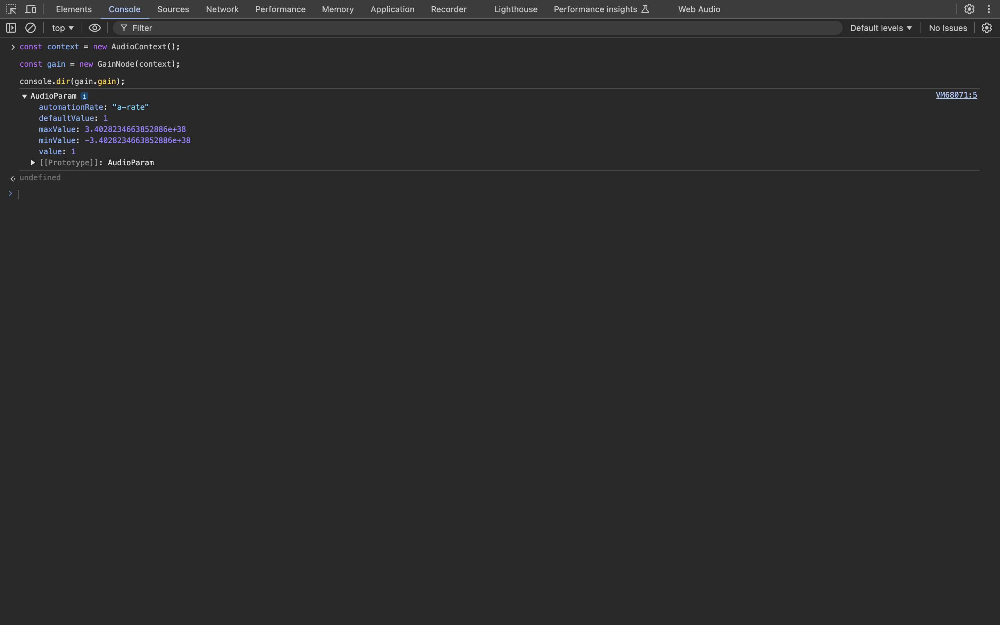

Web Music ドキュメント
Web Music
Web Music とは, Web (ブラウザ) をプラットフォームにした音楽アプリケーション, そして, そのような Web
アプリケーションを実装するために必要となる, クライアントサイド JavaScript API (ブラウザ API) の総称です. これは, 一般的な技術用語ではなく,
技術マーケティング的な造語です.
具体的には, 以下のような, クライアントサイド JavaScript API の総称です.
本サイト制作開始時点の 2023 年時点で Web Audio API と WebRTC に関しては, W3C recommendation , HTMLMediaElement に関しては,
HTML Living Standard (2019 年 6 月以降, HTML や DOM に関わる仕様策定は W3C ではなく
WHATWG が仕様策定の主体になることが決定されたので, HTMLMediaElement は HTML
Living Standard です) となっており, モダンブラウザであれば利用することが可能です (ただし, クライアントサイド JavaScript の宿命ではありますが, OS
やブラウザによって挙動が異なることは少なからずあるので, 移植性まで考慮すると, そのためのクロスブラウザ対応の問題は必要となります).
これらのクライアントサイド JavaScript API は 2010 年代前半ごろは, HTML5 というバズワード化したカテゴリに分類される API でした. 現在は, HTML5
という仕様, あるいは, 用語が定着したからか, HTML5 というワードが使われることはほぼなくなりました. したがって, Web Music に関係する API も,
膨大なクライアントサイド JavaScript API のうちのいくつかです (という認識が一般的と言えます).
クライアントサイド JavaScript とは ?
クライアントサイド JavaScript とは, JavaScript の仕様の標準である ECMAScript (JavaScript の実行コンテキストに依存しない言語仕様. これに準拠している
JavaScript のコードであれば, Web ブラウザでも, Node.js でも, ブラウザ拡張でも使うことができます) と, 実行コンテキスト
(広義な意味でのプラットフォーム) である Web ブラウザで実行する場合にのみアクセス可能な API です (例えば, Web Music の API は Node.js
で使うことはできません. また, Web ブラウザでも Web Workers が生成したスレッドでは, メインスレッド (UI スレッド)
と実行コンテキストが異なるので使うことができません).
Web Audio API
Web Music のなかで, もっともコアな API が Web Audio API です. 言い換えると, Web
をプラットフォームとした音楽アプリケーションを制作するほとんどの場合で必要になる API ということです. なぜなら,
HTMLAudioElement はオーディオファイルを再生するための API で, 高度なオーディオ処理をすることはできず (jsfx
のようにハッキーな実装をすることでエフェクトをかけるぐらいは可能ですが, 仕様のユースケースとして想定されている使い方ではありません),
リアルタイム性やインタラクティブ性も考慮された API ではないからです (厳密には, 考慮された経緯もあって,
Audio コンストラクタが定義されています). また, Web Music として, Web MIDI API や WebRTC を使う場合, 実際のオーディオ処理は Web Audio API
が実行することになります.
Web Music の歴史
古くは, Internet Explorer が独自に
bgsoundHTMLAudioElement に相当する HTML タグと言えます). そのあと, Java アプレットや ActionScript (Flash) によって, Web Audio API
で実現できているような高度なオーディオ処理が可能となりました.
しかし, これらは特定のベンダーに依存していたので, Flash や Silverlight などブラウザの拡張機能 (プラグイン) という位置づけでした. Web 2.0
(もっと言えば, Ajax) を機にブラウザでも, ネイティブアプリケーションのような Web アプリケーションが実装されてくるようになると, これまで拡張機能
(オーディオ処理だけでなく, グラフィックス, ストレージ, ローカルファイルへのアクセス, ソケットなど) に依存していたような機能をブラウザ標準で
(クライアントサイド JavaScript API で) 実現できる流れが 2010 年ごろから活発になりました (このころ, HTML5 という位置づけで仕様策定され,
モダンブラウザで実装されるようになりました).
ドキュメントプラットフォームとしての Web に, アプリケーションプラットフォームが追加されていく転換期に, Web Audio API
も仕様策定されて現在に至っています.
草案 (Working Draft) (2011 年 12 月 15
日に公開)
Web Audio API 1.0 勧告 (W3C recommendation) (2021 年 6
月 17 日に公開)
Web Audio API 1.1 (最新の W3C Working Draft) (2024 年 11
月 5 日に公開)
Audio Data API
厳密な歴史を記載すると, Web Audio API よりわずかに先行して Firefox で
Audio Data API というブラウザオーディオ API
が実装されていました. HTMLAudioElement の拡張という位置づけで, 出力するオーディオデータを直接演算する API がメインでした (Web Audio API
の ScriptProcessorNode に相当する API). 間もなくして, Web Audio API に統一される方針となり, Firefox も Web Audio API
のサポートを開始したので現在は削除されています.
このサイトに関して
このサイト (ドキュメント) の目的は, Web Music, その中核となる Web Audio API について解説しますが, W3C
が公開している仕様のすべてを解説するわけではありません. また, JavaScript の言語仕様の解説は, サイトの目的ではないこともご了承ください (ただし, Web
Audio API を使う上で, 必要となってくるクライアントサイド JavaScript API に関しては必要に応じて解説をします (例. File API,
Fetch API など).
このサイトは W3C が公開している仕様にとって代わるものではなく, Web Audio API の仕様の理解を補助するリファレンスサイトと位置づけてください.
デスクトップブラウザでは少なくなりましたが, モバイルブラウザでは仕様とブラウザの実装に差異があり,
仕様では定義されているのに動作しないということもあります. その場合には, 開発者ツールなどを活用して,
実装されているプロパティやメソッドを確認してみてください.
解説の JavaScript コードに関して
ECMAScript 2015 以降の仕様に準拠したコードで記載します. また, ビルドツールなどを必要としないように, TypeScript
での記述やモジュール分割などもしません (端的には, コピペすればブラウザコンソールなどで実行できるようなサンプルコード, あるいは,
コード片を記載します). 具体的には, 以下のような構文を使います.
const, let による変数宣言Template Strings
アロー関数
クラス
Promise, または, async/await
Web Audio API のコードも仕様で推奨されているコードを基本的に記載します (例えば, AudioNode インスタンスを生成する場合,
コンストラクタ形式が推奨されているので, そちらを使います). ただし, 現時点であまりにも実装の乖離が大きい場合は, フォールバック的な解説として,
実装として動作するコードを記載します.
前提知識と経験
前提知識としては, ECMAScript 2015 以降の JavaScript の言語仕様を理解していることと, Web ブラウザを実行環境にした JavaScript による Web
アプリケーションを実装した経験ぐらいです. Web Audio API は, ユースケースにおいて想定されるオーディオ信号処理を抽象化しているので,
オーディオ信号処理に対する理解がなくても, それなりのアプリケーションは制作できます (アプリケーションの仕様しだいでは不要になるぐらいです). もちろん,
オーディオ信号処理の理解や Web 以外のプラットフォームでのオーディオプログラミングの経験 (特に, GUI
で必要なリアルタイム性のオーディオプログラミングの経験) があれば, それは Web Audio API を理解するうえで活きます. Web Audio API
が標準でサポートしないようなオーディオ処理を実現したいケースではむしろ必要になります.
また, 音楽理論に対する知識も不要です. Web Audio API はユースケースとして, 音楽用途に限定していないからです. したがって, このサイトでは,
アプリケーションによっては必要になるドメイン知識として位置づけます (もちろん, ユースケースとして, 音楽用途も想定されているので, Web
をプラットフォームにした音楽アプリケーションを制作する場合には必要となるケースが多いでしょう).
このサイトでは, オーディオ信号処理や音楽理論など必要に応じて解説します. Web Audio API が解説の中心ではありますが, Web Music
アプリケーションを制作するための標準ドキュメントとなることを目指すからです (オーディオ信号処理や音楽理論を深入りする場合は,
それぞれ最適なドキュメントや書籍がたくさんあるのでそちらを参考にしてください).
Web Audio API に対する懐疑的な意見
Web Audio API は, 他のプラットフォームのオーディオ API と比較すると, やや奇怪な API 設計であったり, 仕様策定されたころの JavaScript の事情と, 現代の
JavaScript の事情が様変わりしたりしたことから, 懐疑的な意見もあります (参考
WebAudioは何故あんな事になっているのか ).
しかしながら, この記事でも述べられているように,
実はWebAudioはオーディオAPIのオープンスタンダードとしては唯一生き残っている存在と言える。 これはたしかで, その点において学ぶ意義はあります.
音楽アプリケーションとして Web をプラットフォームにする場合は必須となるでしょう.
Issue と Pull Requests
プロローグの最後に, このサイト (ドキュメント) はオープンソースとして
GitHub に公開しています.
このサイトのオーナーも完璧に理解しているわけではないので, 間違いもあるかと思います. その場合には, GitHub に
issue を作成したり,
Pull Requests
を送っていただいたりすると大変ありがたいです.
それでは, Web Music の未来を一緒に開拓していきましょう !
Getting Started
AudioContext
Web Audio API を使うためには, AudioContext クラスのコンストラクタを呼び出して,
AudioContext インスタンスを生成する必要があります. AudioContext インスタンスが Web Audio API
で可能なオーディオ処理の起点になるからです. AudioContext インスタンスを生成することで, Web Audio API
が定義するプロパティやメソッドにアクセス可能になるわけです.
const context = new AudioContext();
何らかの理由で, レガシーブラウザ (特に, モバイルブラウザ) もサポートしなければならない場合, ベンダープレフィックスつきの
webkitAudioContext もフォールバックとして設定しておくとよいでしょう (少なくとも, デスクトップブラウザでは不要な処理で,
これから将来においては確実に不要になる処理ではありますが).
window.AudioContext = window.AudioContext || window.webkitAudioContext;
const context = new AudioContext();AudioContext インスタンスをコンソールにダンプしてみます.
const context = new AudioContext();
console.dir(context);
AudioContext インスタンスに様々なプロパティやメソッドが実装されていることがわかるかと思います. このドキュメントではこれらを
(すべてではありませんが) メインに解説していくことになります. また, このように実装を把握することで, 仕様と実装の乖離を調査することにも役立ちます.
Web Audio API でオーディオ処理を実装するうえで意識することはほとんどありませんが, AudioContext は BaseAudioContext を拡張
(継承) したクラスであることもわかります.
Autoplay Policy 対策
Web Audio API に限ったことではないですが, ページが開いたときに, ユーザーが意図しない音を聞かせるのはよくないという観点から (つまり, UX
上好ましくないという観点から), ブラウザでオーディオを再生する場合,
Autoplay Policy
という制限がかかります. これを解除するためには, ユーザーインタラクティブなイベント 発火後に
AudioContext インスタンスを生成するか, もしくは, AudioContext インスタンスの resume メソッドを実行して
AudioContextState を 'running' に変更する必要があります. これをしないと, オーディオを鳴らすことができません.
また, decodeAudioData など一部のメソッドが Autoplay Policy 解除まで実行されなくなります. ユーザーインタラクティブなイベントとは,
click, mousedown や touchstart などユーザーが明示的に操作することによって発火するイベントのことです.
したがって, load イベントや mousemove など, 多くのケースにおいてユーザが明示的に操作するわけではないようなイベントでは
Autoplay Policy の制限を解除することはできません.
document.addEventListener('click', () => {
const context = new AudioContext();
});
resume メソッドで解除する場合 (この場合, コンソールには警告メッセージが表示されますが, Autoplay Policy
は解除できるので無視して問題ありません).
const context = new AudioContext();
document.addEventListener('click', async () => {
await context.resume();
});
これ以降のセクションでは, 本質的なコードを表記したいので, Autoplay Policy は解除されている状態を前提とします.
AudioNode
Web Audio API におけるオーディオ処理の基本は, AudioNode クラスのインスタンス生成と AudioNode がもつ
connect メソッドで AudioNode インスタンスを接続していくことです. AudioNode クラスは,
それ自身のインスタンスを生成することはできず, AudioNode を拡張 (継承) したサブクラスのインスタンスを生成して, オーディオ処理に使います.
AudioNode はその役割を大きく 3 つに分類することができます.
サウンドの入力点となる AudioNode のサブクラス (OscillatorNode, AudioBufferSourceNode など)
サウンドの出力点となる AudioNode のサブクラス (AudioDestinationNode)
音響特徴量を変化させる AudioNode のサブクラス (GainNode, DelayNode, BiquadFilterNode など)
現実世界のオーディオ機器に例えると, サウンドの入力点に相当する AudioNode のサブクラスが, マイクロフォンや楽器, 楽曲データなどに相当,
サウンドの出力点に相当する AudioNode のサブクラスが. スピーカーやイヤホンなどに相当, そして, 音響特徴量を変化させる
AudioNode のサブクラスがエフェクターやボイスチェンジャーなどが相当します.
これらの, AudioNode のサブクラスを使うためには, コンストラクタ呼び出し , または,
AudioContext インスタンスに実装されているファクトリメソッドAudioDestinationNode は AudioContext インスタンスの destination プロパティでインスタンスとして使えるので,
コンストラクタ呼び出しやファクトリメソッドは定義されていません).
例えば, 入力として, オシレーター (OscillatorNode) を使う場合, コンストラクタ呼び出しの実装だと以下のようになります.
const context = new AudioContext();
const oscillator = new OscillatorNode(context);
インスタンス生成時には, その AudioNode のサブクラスに定義されているパラメータ (OscillatorNode の場合,
OscillatorOptions) を指定することも可能です.
const context = new AudioContext();
const oscillator = new OscillatorNode(context, { type: 'sawtooth', frequency: 880 });ファクトリメソッドでインスタンス生成する場合, 以下のようになります.
const context = new AudioContext();
const oscillator = context.createOscillator();
コンストラクタ呼び出しによる, AudioNode のサブクラスのインスタンス生成は, Web Audio API の初期には仕様策定されておらず,
AudioContext インスタンスに実装されているファクトリメソッド呼び出す実装のみでした. インスタンス生成時に,
パラメータを変更可能なことから, どちらかと言えば, コンストラクタ呼び出しによるインスタンス生成が推奨されているぐらいですが,
ファクトリメソッドが将来非推奨になることはなく, また, 初期の仕様には仕様策定されていなかったことから,
レガシーブラウザの場合, コンストラクタ呼び出しが実装されていない場合もあります . したがって, サポートするブラウザが多い場合は,
ファクトリメソッドを, サポートするブラウザが限定的であれば, コンストラクタ呼び出しを使うのが現実解と言えるでしょう.
connect メソッド (AudioNode の接続)
現実世界の音響機器では, 入力と出力, あるいは, 音響変化も接続することで, その機能を果たします. 例えば, エレキギターであれば,
サウンド入力を担うギターとサウンド出力を担うアンプ (厳密にはスピーカー) は, 単体ではその機能を果たしません.
シールド線などで接続することによって機能します.
このことは, Web Audio API の世界も同じです. (AudioContext インスタンスを生成して,) サウンド入力点となる
AudioNode のサブクラスのインスタンス (先ほどのコード例だと, OscillatorNode インスタンス) と, サウンド出力点となる
AudioDestinationNode インスタンスを生成しただけではその機能を果たしません. 少なくとも,
サウンド入力点と出力点を接続する処理が必要となります (さらに, Web Audio API が定義する様々なノードと接続することで, 高度なオーディオ処理を実現する
API として真価を発揮します).
Web Audio API のアーキテクチャは, 現実世界における音響機器のアーキテクチャと似ています. このことは, Web Audio API
の理解を進めていくとなんとなく実感できるようになると思います.
Web Audio APIにおいて「接続」の役割を担うのが, AudioNode がもつ connect メソッドAudioNode サブクラスのインスタンスの, connect メソッドを呼び出します. このメソッドの第 1 引数には, 接続先となる
AudioNode のサブクラスのインスタンスを指定します.
const context = new AudioContext();
const oscillator = new OscillatorNode(context);
// OscillatorNode (Input) -> AudioDestinationNode (Output)
oscillator.connect(context.destination);
サウンドの入力点と出力点を接続し, 最小の構成を実装できました. しかし, まだ音は出せません. なぜなら,
サウンドを開始するための音源スイッチをオンにしていないからです. 現実世界の音響機器も同じです. 現実世界がそうであるように, Web Audio API
においても, 音源のスイッチをオン, オフする必要があります. そのためには, OscillatorNode クラスがもつ
start メソッドstop メソッド
const context = new AudioContext();
const oscillator = new OscillatorNode(context);
// OscillatorNode (Input) -> AudioDestinationNode (Output)
oscillator.connect(context.destination);
// Start immediately
oscillator.start(0);
// Stop after 2.5 sec
oscillator.stop(context.currentTime + 2.5);
start メソッドの引数に 0 を指定していますが, これはメソッドが呼ばれたら, 即時にサウンドを開始します.
stop メソッドの引数には, AudioContext インスタンスの currentTime2.5 を加算した値を指定していますが, これは, stop メソッドを実行してから, 2.5
秒後に停止することをスケジューリングしています (詳細は, のちほどのセクションで Web Audio API におけるスケジューリングとして解説しますが,
AudioContext インスタンスの currentTime は,
AudioContext インスタンスが生成されてからの経過時間を秒単位で計測した値AudioContextState が 'running' である状態での経過秒数stop メソッドの引数も
0 を指定すれば即時にサウンドを停止します. ちなみに, start メソッド, stop メソッドもデフォルト値は
0 なので, 引数を省略して呼び出した場合, 即時にサウンドを開始, 停止します.
これで, とりあえず, ブラウザ (Web) で音を鳴らすことができました !
AudioParam
サウンドの入力点と出力点を生成して, それらを接続するだけでは, 元の入力音をそのまま出力するだけなので高度なオーディオ処理はできません. むしろ, Web
Audio API において重要なのは, この入力と出力の間に, 音響変化をさせる AudioNode を接続することです. 音響変化をさせるためには,
音響変化のためのパラメータを取得・設定したり, 周期的に変化させたり (LFO) できる必要があります. Web Audio API において, その役割を担うのが
AudioParamAudioNode が現実世界の音響機器と例えをしましたが, それに従うと,
AudioParam クラスはノブやスライダーなど音響機器のパラメータを設定するコントローラーのようなものです.
AudioParam クラスは直接インスタンス化することはありません. AudioNode のプロパティとして,
AudioNode のサブクラスのインスタンスを生成した時点でインスタンス化されているのでプロパティアクセスで参照することが可能です.
AudioParam では, 単純なパラメータの取得や設定だけでなく, そのパラメータを周期的に変化させたり (LFO), スケジューリングによって変化させる
(エンベロープジェネレーターなど) ことが可能です (ここはオーナーの経験からですが, Web Audio API で高度なオーディオ処理を実装するためには,
AudioParam を理解して音響パラメータを制御できるようになるかが非常に重要になっていると思います).
GainNode (AudioNode インタンスの生成と接続, AudioParam の取得と設定)
AudioNode と AudioParam の具体的な利用例として, このセクションでは, GainNodeGainNode はその命名のとおり, ゲイン (増幅率 ), つまり, 入力に対する出力の比率 (入力を
1 としたときに出力の値) を制御するための AudioNode で, Web Audio API におけるオーディオ処理で頻繁に使うことになります.
このセクションでは, 単純に, GainNode の gainAudioParam インスタンス) を参照して,
そのパラメータを取得・設定してみます (この実装例では, 音量の制御と考えても問題ありません).
GainNode も AudioNode のサブクラスなので, コンストラクタ呼び出し, または, ファクトリメソッドで
GainNode インスタンスを生成できます.
const context = new AudioContext();
const gain = new GainNode(context);
コンストラクタ呼び出しで生成する場合, 初期パラメータ (GainOptions
const context = new AudioContext();
const gain = new GainNode(context, { gain: 0.5 });ファクトリメソッドで生成する場合.
const context = new AudioContext();
const gain = context.createGain();GainNode インスタンスを生成したら, OscillatorNode と AudioDestinationNode の間に接続します.
const context = new AudioContext();
const oscillator = new OscillatorNode(context);
const gain = new GainNode(context, { gain: 0.5 });
// OscillatorNode (Input) -> GainNode (Master Volume) -> AudioDestinationNode (Output)
oscillator.connect(gain);
gain.connect(context.destination);
// Start immediately
oscillator.start(0);
// Stop after 2.5 sec
oscillator.stop(context.currentTime + 2.5);これで実際にサウンドを発生させると, 音の大きさが小さく聴こえるはずです.
このコードだと, 初期値を変更しているだけなので, 例えば, ユーザー操作によって変更するといったことができないので,
インスタンス生成時以外でパラメータを設定したり, 取得したりする場合は, GainNode の gain プロパティを参照します. これは,
先ほども記載したように, AudioParam インスタンスです. パラメータの取得や設定をするには, その
value
簡単な UI として, 以下の HTML があるとします.
<label for="range-gain">gain</label>
<input type="range" id="range-gain" value="1" min="0" max="1" step="0.05" />
<span id="print-gain-value">1</span>
この input[type="range"] のイベントリスナーで, input[type="range"] で入力された値 (JavaScript の
number 型) を gain (AudioParam インスタンス) の value プロパティに設定し, また,
その値を取得して, HTML に動的に表示します.
const context = new AudioContext();
const oscillator = new OscillatorNode(context);
const gain = new GainNode(context);
// OscillatorNode (Input) -> GainNode (Master Volume) -> AudioDestinationNode (Output)
oscillator.connect(gain);
gain.connect(context.destination);
// Start immediately
oscillator.start(0);
const spanElement = document.getElementById('print-gain-value');
document.getElementById('range-gain').addEventListener('input', (event) => {
gain.value = event.currentTarget.valueAsNumber;
spanElement.textContent = gain.value;
});
AudioParam のパラメータの取得や設定は, このように, JavaScript のオブジェクトに対するプロパティの getter や setter と同じなので,
特に違和感なく理解できるのではないでしょうか (設定に関しては,
あとのセクションで解説するパラメータのオートメーションメソッドを利用する方法もあります).
AudioNode や AudioParam の接続によって構成されるオーディオデータのルーティングを, Web Audio API の仕様では,
オーディオグラフ (Audio Graph ) と用語定義しています.
このセクションでは, Web Audio API の設計の基本となる (Web Audio API のアーキテクチャを決定づけている), AudioContext,
AudioNode, AudioParam の関係性とそのパラメータの取得・設定の実装を解説しました. 以降のセクションでは, ユースケースに応じて,
これら 3 つのクラスの詳細についても解説を追加していきます.
「音」とは ?
このセクションでは, そもそも「音」とはなにか ? からスタートして, 音の特性について簡単に解説します (いわゆる,
音響学 の基本のほんの一部分を解説します). 網羅的な解説はしないので, Web Audio API を理解するうえで, 最低限の解説をできるだけ簡単に解説します.
また, そのために, 厳密さは犠牲にしている解説も多くあると思います. 音のスペシャリストの方からすると, ちょっと違う ...
という部分はたくさんあるかと思いますがご了承ください (ただし, あきらかに間違った解説や誤解を招く可能性のある解説については遠慮なく Issue を作成したり,
Pull Requests を送ったりしていただければと思います).
Web Audio API について解説するセクションではないので, 音の特性 (音響学) に関して学んだことあれば,
このセクションはスキップしていただくのがよいでしょう.
音の実体
そもそも, 「音」って何なのでしょうか？ 結論としては, 音とは媒体の振動が聴覚に伝わったものと定義することができます.
「媒体」というものが抽象的でよくわからないかもしれませんが, 具体的には, 空気や水です. 日常の多くの音は空気を媒体として,
空気の振動が聴覚に伝わることで音として知覚するわけですが, 同じことは水中でも起きます. また,
普段聴いている自分の声は骨を媒体にして伝わっている音です.
音のモデリング
音をコンピュータで表現するためには, 媒体の振動を数式で表現して, その数式によって導出される数値を 2 進数で表現できる必要があります.
音の実体は媒体の振動というのを説明しましたが, この振動を表現するのに適した数学的な関数が, sin 関数 です (cos 関数は sin
関数の位相の違いでしかないので本質的に同じと考えてもよいでしょう. また, tan 関数は含まれません. その理由は,
$\frac{\pi}{2}$ や $-\frac{\pi}{2}$ で
$\infty$ や
$-\infty$ になるので振動を表現するには都合が悪いからと考えてよいでしょう).
Web Audio APIでも, OscillatorNode の type プロパティがとりうる値 (OscillatorType) の 1 つとして
'sine' が定義されています.
音を扱う学問や工学では, この sin 関数が, 音の波 (音波 ) をモデリングしていることから, 正弦波 (sin 波 ) と呼ぶことが多いです.
とちらであっても, 実体は同じなのですが, このドキュメントではこれ以降, 慣習にしたがって, 正弦波 (sin 波) と記述することにします.
正弦波 (sin 波)
ここからは少し数学・物理的な話になってきます. 正弦波 (sin 関数) ってどんな形か覚えてらっしゃいますか？
正弦波 (sin 関数)
具体的に解説するためにパラメータを設定します.
パラメータつき正弦波 (sin 関数)
振幅と周波数 (周期)
まず, 縦軸に着目してみます. 縦軸のパラメータは, 振幅 と呼ばれ, 単位はありません. ちなみに, 振幅 1 の正弦波と表現した場合,
上記のように振幅の最大値が 1, 最小値が -1の 正弦波のことを意味しています. 次に, 横軸に着目してみます.
横軸のパラメータは, 時間 を表しています. 縦軸との関係で表現すると, ある時刻における正弦波の振幅値を表した図 (グラフ) と言えます. ここで,
パラメータつきの正弦波を見てみます. すると, 山 1 つと谷 1 つを最小の構成として, それが繰り返されている, すなわち,
周期性 をもつことがわかります. 数学的には, すべての時間
$t \left(0 \leqq {t} < \infty \right)$ に対して,
$f\left(t + L\right) = f\left(t\right)$ となる定数が存在するとき,
$f\left(t\right)$ は周期 $L$ の周期関数 と定義されます. そして, sin
関数は, 周期 $L$ としたとき
$\sin\left(t + L\right) = \sin\left(t\right)$ が成立するので, 正弦波 (sin 関数) は周期関数 です.
この波の最小の構成が発生するために要する時間を周期 と呼びます. 例として, 上記の正弦波で考えると, 最小の構成の発生までに
1 sec の時間を要しているので, 周期は 1 sec となります. この真逆の概念を表す用語が周波数 です. すなわち,
1 sec の間に, 波の最小の構成が何回発生するか ? ということを表し, 単位は Hz (ヘルツ) です. Hz (ヘルツ) という名前ですが,
日本語に翻訳すれば, 何回の「回」に相当するでしょう. 上記の正弦波で考えると. この正弦波は, 1 sec の間に最小の構成が
1 回発生しているので, 周波数は, 1 Hz ということになります.
周期と周波数は互いに真逆の概念ですが, これは数学的には, 互いに逆数 の関係にあります. すなわち,
周期の逆数は周波数を表し, 周波数の逆数は周期を表します . 互いに関係のある値なので, 周期の話をすれば周波数の話も同時にしていることであり,
周波数の話をすれば周期の話も同時にしていることになります. ただ, 周波数という用語のほうがよく使われる傾向にあると思うので, このドキュメントでは,
周波数の用語を優先的に利用することにします.
少し慣れるために, パラメータ (振幅や周波数) を変えた正弦波 (sin 波) を見てましょう.
振幅 0.5, 周波数 1 Hz (周期 1 sec) の正弦波 ('sine')
振幅 1, 周波数 2 Hz (周期 0.5 sec) の正弦波 ('sine')
振幅 1, 周波数 0.5 Hz (周期 2 sec) の正弦波 ('sine')
いかがでしたか ? 振幅と周波数は Web Audio API の解説においても頻出する用語なので, ある程度理解しておくと, Web Audio API の理解も進むでしょう.
音の 3 要素
ここまで, 数学・物理的な話が続いたので, 少し気分を変えて, 感覚視点 (知覚) から音を考えてみましょう.
日常でも, 「音が大きい・小さい」, 音楽を聴いていて「音が高い・低い」,
楽器を演奏していて「この楽器の音色が好き」などと表現することがあるかと思います. これらは, 音を感覚視点, すなわち, 音を知覚するときの視点 で,
どんな音か ? を表現しています. これらの表現にある, 音の大きさ ・音の高さ ・音色 を音の 3 要素 と呼びます.
音の 3 要素と, 先に解説した振幅・周波数・波形と大きな関わりがあります.
音の大きさ (Loudness)
振幅が大きく影響する
音の高さ (Pitch)
周波数が大きく影響する
音色 (Timbre)
波形 (エンベロープ) が大きく影響する
大きく影響する という表現に注意してください. 例えば, 音の大きさは振幅のみで決定されるわけではないということです. 知覚は主観的な指標であり,
振幅・周波数・波形は物理量だからです. 物理現象である音と知覚を関連づける指標として, 音響特徴量 (等ラウドネス曲線や基本周波数, セントロイド,
ケプストラムなど) が知られています.
簡単な解説を記載しますが, これらの音響特徴量に関する詳細な解説は, 最適なドキュメントや書籍が豊富にあるので, そちらを参考にしてください.
等ラウドネス曲線
周波数を横軸に, 音圧レベルを縦軸にして, 同じ音の大きさに聴こえる (知覚できる) 点をプロットして曲線で結んだグラフです, 等ラウドネス曲線から,
音圧レベル (振幅) が同じでも周波数によって音の大きさが異なることが確認できます
基本周波数
音信号に含まれる最も低い周波数成分で, 特に, 音楽においては, 音高を決める重要な音響特徴量となります
セントロイド
他の工学分野でも利用される用語で「重心」という意味ですが, オーディオ信号処理においては, スペクトルの重心 (偏り) を表す音響特徴量で,
音楽制作ではミキシング・マスタリングのプロセスで, セントロイドを調整をすることがあります
ケプストラム
音声分析で利用されることが多く, パワースペクトル (振幅を 2 乗したスペクトル) 対数をとって, 逆フーリエ変換した, 時間領域の信号 (音響特徴量) です.
ケプストラムによって, 音声を声帯振動と声道フィルタの成分に分離して分析することが可能になります
Web Audio API と音の関係
GainNode の gain プロパティと音の大きさ
GainNodeの gain プロパティ (AudioParam) を利用することで, 音の大きさを変えることができます.
物理的な視点で見ると, 振幅を操作することによって, 音の大きさを変えています.

OscillatorNode の frequency プロパティと音の高さ
OscillatorNode の frequency プロパティ (AudioParam) を利用することで, 音の高さを変えることができます.
物理的な視点で見ると, 周波数を操作することによって, 音の高さを変更しています.
仕様では, frequency プロパティのとりうる値の範囲は, 負のナイキスト周波数からナイキスト周波数までですが (ナイキスト周波数は,
サンプリング のセクションで解説しています. ナイキスト周波数について理解がなければ,
おおよそ, -20 kHz ~ 20 kHz と大雑把に把握していただいて問題ないです),
音楽アプリケーションなどで出力する音としてはそこまで設定できてもあまり意味はないでしょう. その理由は,
人間が聴きとることが可能な音の周波数の範囲は 20 Hz ~ 20000 Hz (20 kHz) 程度だからです .
さらに, 音程 (音の高さの差) として知覚可能な周波数の上限, 言い換えると, 音楽として有効な音の周波数はもっと低くなります (ピアノ 88
鍵の音域を参照してください).
ピアノ 88 鍵と周波数
OscillatorNode の detune プロパティと音の高さ
OscillatorNode の detune プロパティ (AudioParam) を利用することでも, 音の高さを変えることができます.
物理的な視点も frequency プロパティと同じです. ただし, detune プロパティは, 音楽的な視点で音の高さを変更します.
detune プロパティの用途は, (音楽で言う) 半音よりも小さい範囲で音の高さを調整したり,
オクターブ違いの音を生成・合成したりするために利用します. この機能によって, きめ細かいサウンド生成が可能になったり,
サウンドを合成する場合において厚みをもたせることが可能になったりします. シンセサイザーのファインチューン機能や, エフェクターの 1
種であるオクターバーを実現するためにあると言えるでしょう.
frequency プロパティの単位は Hz (ヘルツ) で, 波が 1 sec の間に何回発生するのかを意味していました. 一方で,
detune プロパティの単位は cent (セント) です. これは, 音楽の視点から音の高さをとらえた単位で,
1 オクターブの音程を 1200 で等分した値 です.
1 つ高いラとか, 1 つ低いラのことを, 1 オクターブ高いラ, 1 オクターブ低いラと表現することがあります.
音楽的な視点でのオクターブはまさにそういう意味です.
オクターブを物理的な視点でみると, 周波数比が 1 : 2 の関係にある音程 を意味しています. 具体的に説明すると, いわゆる普通のラ (A) (ギターの第 5
弦の開放弦) の周波数は 440 Hz です (キャリブレーションチューニングなどしている場合は別ですが ...). この音を基準に考えると, 1
オクターブ高いラの周波数は 880 Hz です. 周波数比が, 440 : 880 = 1 : 2 になります.
話を cent に戻すと, この 1 : 2 の音程を 1200 で割った値が 1 cent というわけです. なぜ, 1200 ?
と疑問に思う方もいらっしゃると思いますが, ピアノをされる方は直感で理解できると思います. ピアノをされない方のために, 1
オクターブの音程間にピアノの鍵盤がいくつあるか数えてみましょう. 1 オクターブ間であればいいので, 好きな音から始めてください.
1 オクターブの鍵盤数
数えてみると, 12 個の鍵盤があります. 1 オクターブ間の音程を 1200 で割った (1200 分割した) 値が 1 cent でしたので, 1
オクターブ間の音程を 12 分割すると, 100 cent ということになります. つまり, 100 cent 値が高くなると,
右隣の鍵盤の音の高さに変わるということです.
例として, 440 Hz のラ (A) の音を 100 cent 高くすると, 右隣の鍵盤の ラ# (A#) に, さらに 100 cent 高くすると,
シ (B) になります. このように, -100 cent ~ 100 cent の間の値を設定することによって,
半音以下の音の高さの調整が可能になるわけです. また, 1200 cent, あるいは, -1200 cent と 1200 cent
ごとに値を設定することにより, オクターブ単位で調整することも可能です.
音楽では, 1 オクターブの音程を 12 等分した周波数比の関係を 12 平均音律と呼びます. 12 平均音律においては, 隣り合う音, つまり, 半音の周波数比は,
およそ, 1 : 1.059463 (正確には, 1 : $2^{\left(1 / 12\right)}$ ) で, これが 100 cent となるわけです.
OscillatorNode の type プロパティと音色
OscillatorNode の type プロパティ (OscillatorType) の値を利用することで, 正弦波だけでなく,
矩形波やノコギリ波, 三角波を生成することができます. それによって, 音色を変化させることが可能です. ちなみに,
波形の概形はエンベロープ と呼ばれます. OscillatorNode のみで制御可能な範囲では, この
type プロパティに応じたエンベロープが音色に大きく影響しています.
このセクションのまとめとして, 基本波形, 振幅, 周波数を変化させたときの波形を視覚化するデモとなります. 波形の変化とともに, 知覚する音 (音の 3 要素)
の変化を体感してみてください.
OscillatorNode
Web Audio API のアーキテクチャを解説するうえで, OscillatorNode は少し説明しましたが, このセクションでは, Web Audio API
におけるサウンド生成・合成のベースとなる, OscillatorNode についてその詳細を解説します.
シンセサイザーの基本波形の生成・合成, モジュレーション系エフェクターで必須となる LFO (Low-Frequency Oscillator) など, Web Audio API
において用途の広い, コアとなる AudioNode です. LFO に関しては, エフェクターのセクションで解説するので,
このセクションでは基本波形の生成・合成に関して解説します.
type プロパティ (OscillatorOptions)
ただし, 'custom' のみは特殊で, 直接値を設定するとエラーが発生します. これは, OscillatorNode の
setPeriodicWave メソッドによって, 自動的に 'custom' に設定されます. また, その引数として,
AudioContext の createPeriodicWave メソッドで波形テーブルを生成する必要があります. 波形テーブルの生成は,
スペクトルや倍音などオーディオ信号処理の知識が必要になるので, 別のセクションで解説します.
frequency プロパティ (AudioParam) / detune プロパティ (AudioParam)
周波数を制御して音の高さを変更します. frequency プロパティ と detune プロパティを合わせて算出される周波数 ($f_{\mathrm{computed}}$ ) は, 仕様では以下のように決定されます.
$f_{\mathrm{computed}} = \mathrm{frequency} \cdot \mathrm{pow}\left(2, \left(\mathrm{detune} / 1200 \right)\right)$
この数式は, frequency は物理的な視点 (Hz) で周波数を制御, detune は音楽的な視点 (cent)
で周波数を制御することを意味しています.
start メソッド / stop メソッド
OscillatorNode のプロパティを設定して音の高さや音色を制御することはそれほど難しくないかと思います. また, 発音し続けるか, 1 度だけ発音
(start メソッド)・停止 (stop メソッド) する場合も直感的に実装可能です. おそらく, 多くの場合, ハマってしまうのが,
OscillatorNode の発音と停止を繰り返す場合です.
OscillatorNode インスタンスは, 言わば使い捨てなので, 一度発音・停止した OscillatorNode インスタンスは再度, 発音 (停止)
することはできません. 例えば, ユーザーインタラクティブな操作で発音・停止を繰り返すような場合, OscillatorNode インスタンスを再生成して,
再度 AudioDestinationNode に接続して, start メソッド (stop メソッド) を実行する必要があります.
例えば, 以下のコードはボタンをクリックするたびに, 発音・停止することを期待していますが, 2 回目のクリック以降は, 発音されずエラーが発生します.
<button type="button">start</button>const context = new AudioContext();
const oscillator = new OscillatorNode(context);
// OscillatorNode (Input) -> AudioDestinationNode (Output)
oscillator.connect(context.destination);
const buttonElement = document.querySelector('button[type="button"]');
buttonElement.addEventListener('mousedown', (event) => {
// Start immediately
// But, cannot start since the second times ...
oscillator.start(0);
buttonElement.textContent = 'stop';
});
buttonElement.addEventListener('mouseup', (event) => {
// Stop immediately
oscillator.stop(0);
buttonElement.textContent = 'start';
});
期待する動作, つまり, 発音・停止を繰り返すするには, 一度 start・stopした
OscillatorNode インスタンスは破棄して, 再度 OscillatorNode インスタンスを生成します.
const context = new AudioContext();
let oscillator = null;
const buttonElement = document.querySelector('button[type="button"]');
buttonElement.addEventListener('mousedown', (event) => {
if (oscillator !== null) {
return;
}
oscillator = new OscillatorNode(context);
// OscillatorNode (Input) -> AudioDestinationNode (Output)
oscillator.connect(context.destination);
// Start immediately
oscillator.start(0);
buttonElement.textContent = 'stop';
});
buttonElement.addEventListener('mouseup', (event) => {
if (oscillator === null) {
return;
}
// Stop immediately
oscillator.stop(0);
// GC (Garbage Collection)
oscillator = null;
buttonElement.textContent = 'start';
});このような仕様なので, start メソッドを続けて呼んだり, stop メソッドを続けて呼んだりしても, エラーが発生します.
start メソッドと stop メソッドは一対
基本波形の合成
基本波形の合成, すなわち, Web Audio API における OscillatorNode の合成は直感的で, 必要なだけ
OscillatorNode インスタンスを生成して, (最後の) 接続先として AudioDestinationNode を指定するだけです.
ただし, そのまま合成 (接続) してしまうと, 振幅が大きくなりすぎて, 音割れが発生してしまうので, GainNode を接続して振幅を調整しています
(逆に, この音割れ (クリッピング) をエフェクトとして使うのが歪み系エフェクターです). もしくは,
DynamicsCompressorNode を接続して振幅を制御して, 意図しない音割れを防ぐこともできます (ただし, 厳密には,
コンプレッサーは振幅の小さい音も相対的に大きくするので, 物理的にはまったく同じではありません).
const context = new AudioContext();
// C major chord
let oscillatorC = null;
let oscillatorE = null;
let oscillatorG = null;
const buttonElement = document.querySelector('button[type="button"]');
buttonElement.addEventListener('mousedown', (event) => {
if ((oscillatorC !== null) || (oscillatorE !== null) || (oscillatorG !== null)) {
return;
}
oscillatorC = new OscillatorNode(context, { frequency: 261.6255653005991 });
oscillatorE = new OscillatorNode(context, { frequency: 329.6275569128705 });
oscillatorG = new OscillatorNode(context, { frequency: 391.9954359817500 });
const gain = new GainNode(context, { gain: 0.25 });
// OscillatorNode (Input) -> GainNode -> AudioDestinationNode (Output)
oscillatorC.connect(gain);
oscillatorE.connect(gain);
oscillatorG.connect(gain);
gain.connect(context.destination);
// Start immediately
oscillatorC.start(0);
oscillatorE.start(0);
oscillatorG.start(0);
buttonElement.textContent = 'stop';
});
buttonElement.addEventListener('mouseup', (event) => {
if ((oscillatorC === null) || (oscillatorE === null) || (oscillatorG === null)) {
return;
}
// Stop immediately
oscillatorC.stop(0);
oscillatorE.stop(0);
oscillatorG.stop(0);
// GC (Garbage Collection)
oscillatorC = null;
oscillatorE = null;
oscillatorG = null;
buttonElement.textContent = 'start';
});
AudioBufferSourceNode
AudioBufferSourceNodeワンショットオーディオの再生 を目的に利用します. ワンショットオーディオとは,
ピアノやギターなど実際の楽器の音源を収録した WAVE ファイルや MP3 ファイルのことです. Web Audio API の仕様では, ユースケースとして,
楽曲データに関しては, MediaElementAudioSourceNodeAudioBufferSourceNode を楽曲データの再生に使うこともできます. 現実解としてユースケースに反した利用をすることも多いです (これは,
AudioBufferSourceNode がオーディオデータの実体である AudioBuffer インスタンスをもつので,
オーディオ信号処理が適用しやすいことが理由として考えられます).
このセクションでは, 仕様上のユースケースであるワンショットオーディオの再生を目的に, AudioBufferSourceNode を解説します.
ところで, ワンショットオーディオの再生であれば, 同じことは HTMLAudioElement (audio タグ) でも可能な場合もあります. 事実, Web
Audio API が仕様策定される以前は, そのようなユースケースも想定して, Audio コンストラクタが定義されています. しかしながら,
HTMLAudioElement (Audio コンストラクタ) によるワンショットオーディオの再生は以下のような問題があります.
JavaScript のタイマー (setInterval や setTimeout) では, 正確なスケジュールングが難しい
HTMLAudioElement のイベントハンドラでも精度が粗く, 正確なスケジュールングが難しい同時発音数の制限
ワンショットオーディオに対して, さらにオーディオ処理を付加したいユースケース
これらの問題を, ある程度容易に解決してくれるのが AudioBufferSourceNode です (もっとも, AudioBufferSourceNode を利用しても,
コンピュータのリソースは有限なので, 計算量が多い場合や他のプロセスがリソースを多く消費している場合などは,
少なからずスケジューリングも正確でなくなります).
buffer プロパティ
AudioBufferSourceNode において, 最も重要と言えるのが, bufferAudioBufferAudioBuffer とは, オーディオデータの実体 (を抽象化するクラス) です.
AudioBuffer
AudioBuffer クラスは, オーディオデータの実体ですが, 直接的にアクセスすることはできません. そのためのメソッドや,
デジタル化されたオーディオデータに必要なパラメータ (サンプリングレートやチャンネル数, オーディオデータ全体のサイズなど) を定義しています.
sampleRate プロパティ
オーディオデータのサンプリング周波数です. これは, createBuffer メソッドで利用して
AudioBuffer インスタンスを生成する場合, 実質的に意味のあるプロパティとなります. decodeAudioData メソッドで取得した
AudioBuffer インスタンスは, AudioContext インスタンスの
sampleRate プロパティの値にリサンプリングされるからです (つまり, その場合, AudioContext インスタンスの
sampleRate プロパティを参照しても同じ値なので).
length プロパティ
1 チャネルにおける, オーディオデータのサイズです. つまり, sampleRate プロパティの逆数であるサンプリング周期と
length プロパティを乗算した値が, オーディオデータの再生時間となります (次に解説する,
duration プロパティの値と同じになります).
$\mathrm{duration} = \frac{\mathrm{length}}{\mathrm{sampleRate}}$
duration プロパティ
オーディオデータの再生時間 (単位は sec) です. 先ほど解説したように, sampleRate プロパティと
length プロパティと関連している値となります.
numberOfChannels プロパティ
オーディオデータのチャンネル数です. 例えば, モノラルであれば 1, ステレオであれば 2, 5.1 チャンネルであれば
6 になります. 次に解説する, getChannelData メソッドの引数の上限を決めている値になっています.
getChannelData メソッド
getChannelData メソッドで引数で指定したチャンネルのオーディオデータを Float32Array として取得することが可能です.
引数となるチャンネルの指定は 0 から numberOfChannels - 1 までです. 例えば, ステレオ (numberOfChannels が
2)であれば, getChannelData(0) で左チャンネルのオーディオをデータを Float32Array で取得し,
getChannelData(1) で右チャンネルのオーディオデータをFloat32Array で取得することができます.
copyFromChannel メソッド / copyToChannel メソッド
他に, AudioBuffer をコピーするためのメソッドがあります. ワンショットオーディオの再生においてはおそらく使うことはないので,
必要であれば, 仕様や MDN などを参考にしてください.
AudioBuffer の生成
AudioBuffer クラスに関して簡単に解説しましたが, 肝心なのは
AudioBuffer インスタンスをどうやって生成するのかということだと思います. Web Audio API では,
decodeAudioDatacreateBufferAudioBuffer インスタンスを生成可能です.
もっとも, ワンショットオーディオ再生目的であれば, createBuffer メソッドを利用することはおそらくなく,
ArrayBuffer インスタンスから AudioBuffer インスタンスを生成する
decodeAudioData メソッドを利用することになると思います. したがって, まずは,
ArrayBuffer インスタンスの取得に関して解説します (これは Web Audio API の解説というよりは, JavaScript で
ArrayBuffer インスタンスを取得する方法なので, すでにご存知の場合はスキップして問題ないです).
ArrayBuffer の取得と decodeAudioData メソッド
クライアントサイド JavaScript で ArrayBuffer を取得するには, Web にあるリソースであれば, Fetch API (もしくは,
XMLHttpRequest), ユーザーのファイルシステムから選択するのであれば File API と
FileReader API を使うことになります.
ワンショットオーディオ再生の場合, アプリケーション側であらかじめオーディオデータを Web にアップロードしているケースがほとんどなので,
このセクションでは, Fetch API で ArrayBuffer を取得する実装を解説します.
Fetch API は, fetch 関数, Headers オブジェクト, Request オブジェクト,
Response オブジェクトの総称ですが, ほとんどのケースで明示的に利用するのは, fetch 関数の呼び出しです.
fetch('./assets/one-shots/piano-C.mp3')
.then((response) => {
return response.arrayBuffer();
})
.then((arrayBuffer) => {
// TODO: Create instance of `ArrayBuffer` by calling `decodeAudioData`
})
.catch((error) => {
// error handling
});
fetch 関数のデフォルトの HTTP メソッドは GET なので, ワンショットオーディオの取得であれば, そのリソースの URL
を指定すればよいでしょう. あとは, 取得した Response オブジェクトの arrayBuffer メソッドを呼び出して,
ArrayBuffer インスタンスを取得するだけです. いずれの関数・メソッドも, Promise を返します. 可読性重視などであれば,
async/await で実装してもよいでしょう.
ArrayBuffer インスタンスが取得できたら, AudioContext インスタンスの decodeAudioDataArrayBuffer インスタンスを指定して, 第 2 引数に, 成功時のコールバック関数を指定します. このコールバック関数の引数に,
AudioBuffer インスタンスが渡されます. 失敗した場合, 第 3 引数のコールバック関数が実行されます. このコールバック関数の引数には,
DOMException インスタンスが渡されます.
const context = new AudioContext();
fetch('./assets/one-shots/piano-C.mp3')
.then((response) => {
return response.arrayBuffer();
})
.then((arrayBuffer) => {
const successCallback = (audioBuffer) => {
// Create instance of `AudioBufferSourceNode`
};
const errorCallback = (error) => {
// error handling
};
context.decodeAudioData(arrayBuffer, successCallback, errorCallback);
})
.catch((error) => {
// error handling
});
初期の頃は上記のような仕様でしたが, 最新の仕様では, 成功時は Promise<AudioBuffer> を返すので, 戻り値から
AudioBuffer インスタンスを取得することも可能です.
decodeAudioData メソッドの実行で 1 つ注意しなければならないのは, decodeAudioData メソッドも
Autoplay Policy
createBuffer メソッド
AudioBuffer インスタンスを生成するには, AudioContext インスタンスの
createBufferAudioBuffer インスタンスからコピー (copyFromChannel メソッドや
copyToChannel メソッドが必要なケース) が考えられます.
これで, ワンショットオーディオを再生する最低限の処理ができているので, あとは AudioBufferSourceNode のインスタンスを生成します
(ファクトリメソッドで生成する場合, createBufferSource メソッドを利用します).
const context = new AudioContext();
fetch('./assets/one-shots/piano-C.mp3')
.then((response) => {
return response.arrayBuffer();
})
.then((arrayBuffer) => {
const successCallback = (audioBuffer) => {
const source = new AudioBufferSourceNode(context, { buffer: audioBuffer });
// If use `createBufferSource`
// const source = context.createBufferSource();
//
// source.buffer = audioBuffer;
};
const errorCallback = (error) => {
// error handling
};
context.decodeAudioData(arrayBuffer, successCallback, errorCallback);
})
.catch((error) => {
// error handling
});
playbackRate プロパティ / detune プロパティ
音楽用途でワンショットオーディオを使う場合, 対応するピッチの数だけ, ワンショットオーディオデータを作成するのは大変です. また, HTTP
リクエストの送受信や decodeAudioData メソッドの実行も多くなってしまうのでパフォーマンス的にもよくありません. それを解決するのが,
playbackRate プロパティと detune プロパティです. これらは, 音の物理的な性質, つまり,
再生速度を変化させるとピッチも変化する という性質を利用して, ピッチ (と再生時間) を変更します. 例えば, playbackRate を
2 に設定すれば, ピッチも 2 倍, つまり, 1 オクターブ高いピッチのオーディオデータの再生を同一の
AudioBuffer インスタンスから可能です. detune は, cent 単位でピッチを変更します. ピッチを変更すると,
再生時間も変わりますが, ワンショットオーディオは再生時間が短時間なので, この点が問題になることはほとんどないでしょう. いずれも,
AudioParam インスタンスなので, 値を取得したり, 設定する場合は, value プロパティにアクセスします.
playbackRate プロパティと detune プロパティを考慮した, 実際の再生速度
$p_{\mathrm{computed}}$ は, 仕様では以下のように決定されます.
$p_{\mathrm{computed}} = \mathrm{playbackRate} \cdot \mathrm{pow}\left(2, \left(\mathrm{detune} / 1200 \right)\right)$
loop プロパティ / loopStart プロパティ / loopEnd プロパティ
ワンショットオーディオをループ再生させたい場合, loop プロパティを true に設定します. また, loop プロパティを
true に設定することで, loopStart プロパティと loopEnd プロパティが有効になります. これらのプロパティは,
ループ再生するオーディオデータの開始位置, 終了位置を秒単位で指定します.
start メソッド / stop メソッド
AudioBufferSourceNode インスタンスは, 言わば使い捨てなので, 一度発音・停止した AudioBufferSourceNode インスタンスは再度,
発音 (停止) することはできません. 例えば, ユーザーインタラクティブな操作で発音・停止を繰り返すような場合,
AudioBufferSourceNode インスタンスを再生成して, 再度 AudioDestinationNode に接続して, start メソッド (stop
メソッド) を実行する必要があります. この仕様は, OscillatorNode とまったく同じです (ただし,
AudioBuffer インスタンスは使い回すことが可能です).
例えば, 以下のコードはボタンをクリックするたびに, 再生・停止することを期待していますが, 2 回目のクリック以降は, 再生されずエラーが発生します.
<button type="button">start</button>const context = new AudioContext();
const source = new AudioBufferSourceNode(context);
// AudioBufferSourceNode (Input) -> AudioDestinationNode (Output)
source.connect(context.destination);
const buttonElement = document.querySelector('button[type="button"]');
buttonElement.addEventListener('mousedown', (event) => {
if (source.buffer === null) {
return;
}
// Start immediately
// But, cannot start since the second times ...
source.start(0);
buttonElement.textContent = 'stop';
});
buttonElement.addEventListener('mouseup', (event) => {
if (source.buffer === null) {
return;
}
// Stop immediately
source.stop(0);
buttonElement.textContent = 'start';
});
fetch('./assets/one-shots/piano-C.mp3')
.then((response) => {
return response.arrayBuffer();
})
.then((arrayBuffer) => {
const successCallback = (audioBuffer) => {
source.buffer = audioBuffer;
};
const errorCallback = (error) => {
// error handling
};
context.decodeAudioData(arrayBuffer, successCallback, errorCallback);
})
.catch((error) => {
// error handling
});
期待する動作, つまり, 再生・停止を繰り返すには, 一度 start・stop した (あるいは, duration まで再生した)
AudioBufferSourceNode インスタンスは破棄して, 再度 AudioBufferSourceNode インスタンスを生成します.
const context = new AudioContext();
let source = null;
let buffer = null;
const buttonElement = document.querySelector('button[type="button"]');
buttonElement.addEventListener('mousedown', (event) => {
if (buffer === null) {
return;
}
source = new AudioBufferSourceNode(context, { buffer });
// AudioBufferSourceNode (Input) -> AudioDestinationNode (Output)
source.connect(context.destination);
// Start immediately
source.start(0);
buttonElement.textContent = 'stop';
});
buttonElement.addEventListener('mouseup', (event) => {
if ((buffer === null) || (source === null)) {
return;
}
// Stop immediately
source.stop(0);
buttonElement.textContent = 'start';
});
fetch('./assets/one-shots/piano-C.mp3')
.then((response) => {
return response.arrayBuffer();
})
.then((arrayBuffer) => {
const successCallback = (audioBuffer) => {
buffer = audioBuffer;
};
const errorCallback = (error) => {
// error handling
};
context.decodeAudioData(arrayBuffer, successCallback, errorCallback);
})
.catch((error) => {
// error handling
});
ワンショットオーディオも, 複数の AudioBufferSourceNode インスタンスを AudioDestinationNode に接続することで合成が可能です
(そのまま合成 (接続) してしまうと, 振幅が大きくなりすぎて, 音割れが発生してしまうので, GainNode を接続して振幅を調整しています).
また, 3 つの AudioBufferSourceNode インスタンスで, それぞれ detune プロパティの値を調整して, C
メジャーコードを再生しています.
const context = new AudioContext();
// C major chord
let sourceC = null;
let sourceE = null;
let sourceG = null;
let buffer = null;
const buttonElement = document.querySelector('button[type="button"]');
buttonElement.addEventListener('mousedown', (event) => {
if (buffer === null) {
return;
}
sourceC = new AudioBufferSourceNode(context, { buffer });
sourceE = new AudioBufferSourceNode(context, { buffer });
sourceG = new AudioBufferSourceNode(context, { buffer });
sourceC.detune.value = 0;
sourceE.detune.value = 400;
sourceG.detune.value = 700;
const gain = new GainNode(context, { gain: 0.25 });
// AudioBufferSourceNode (Input) -> GainNode -> AudioDestinationNode (Output)
sourceC.connect(gain);
sourceE.connect(gain);
sourceG.connect(gain);
gain.connect(context.destination);
// Start immediately
sourceC.start(0);
sourceE.start(0);
sourceG.start(0);
buttonElement.textContent = 'stop';
});
buttonElement.addEventListener('mouseup', (event) => {
if ((buffer === null) || (sourceC === null) || (sourceE === null) || (sourceG === null)) {
return;
}
// Stop immediately
sourceC.stop(0);
sourceE.stop(0);
sourceG.stop(0);
buttonElement.textContent = 'start';
});
fetch('./assets/one-shots/piano-C.mp3')
.then((response) => {
return response.arrayBuffer();
})
.then((arrayBuffer) => {
const successCallback = (audioBuffer) => {
buffer = audioBuffer;
};
const errorCallback = (error) => {
// error handling
};
context.decodeAudioData(arrayBuffer, successCallback, errorCallback);
})
.catch((error) => {
// error handling
});
AudioBufferSourceNode でも, start メソッドと stop メソッドは一対
MediaElementAudioSourceNode
Web Audio API において, 楽曲データに対してなんらかのオーディオ信号処理を適用したい場合に利用するのが
MediaElementAudioSourceNodeHTMLMediaElement (HTMLAudioElement や
HTMLVideoElement) のオーディオデータに対するオーディオ信号処理を適用する場合に利用します.
HTMLMediaElement を音源にするので, MediaElementAudioSourceNode コンストラクタの第 2 引数 (MediaElementAudioSourceOptionsmediaElementcreateMediaElementSource の引数) に,
HTMLMediaElement を指定します.
また, コンストラクタやファクトリメソッドに指定する HTMLMediaElement が HTML パース時点で,
src 属性に指定しているメディアファイルが同一オリジンでない場合, クロスオリジン制限にかかってしまうので,
crossorigin 属性に 'anonymous' を設定オリジン間リソース共有 (CORS : Cross-Origin Resources Sharing ) が可能となります (HTMLMediaElement のみで再生する場合は不要です
<!-- シューベルト 交響曲 第8番 ロ短調 D759 「未完成」 第1楽章 (余談ですが, X JAPAN の「ART OF LIFE」のモチーフになっている楽曲です) -->
<audio src="https://korilakkuma.github.io/Web-Music-Documentation/assets/medias/Schubert-Symphony-No8-Unfinished-1st-2020-VR.mp3" crossorigin="anonymous" controls />const context = new AudioContext();
const audioElement = document.querySelector('audio');
const source = new MediaElementAudioSourceNode(context, { mediaElement: audioElement });
// If use `createMediaElementSource`
// const source = context.createMediaElementSource(audioElement);
// MediaElementAudioSourceNode (Input) -> AudioDestinationNode (Output)
source.connect(context.destination);
MediaElementAudioSourceNode インスタンス生成には 2 点注意すべき点があります. 上記のサンプルコードのように,
HTMLMediaElement に HTML パース時点で, src 属性にメディアファイルが指定されている場合は, 特に問題ありませんが,
インタラクティブに, 例えば, ユーザーのファイルシステムからメディアファイルを選択するような場合,
HTMLMediaElement の loadstart イベント発火以降にインスタンスを生成する必要がありますsrc 属性にメディアファイルを指定している場合, loadstart イベントは発火しないので注意が必要です).
loadstart イベント以降に発火するイベントであればよいので, canplaythrough イベントハンドラなどで
MediaElementAudioSourceNode インスタンスを生成してもよいでしょう.
<input type="file" />
<audio controls />const context = new AudioContext();
const inputElement = document.querySelector('input[type="file"]');
const audioElement = document.querySelector('audio');
inputElement.addEventListener('change', (event) => {
const file = event.currentTarget.files[0];
audioElement.src = window.URL.createObjectURL(file);
});
audioElement.addEventListener('loadstart', () => {
const source = new MediaElementAudioSourceNode(context, { mediaElement: audioElement });
// MediaElementAudioSourceNode (Input) -> AudioDestinationNode (Output)
source.connect(context.destination);
});
もう 1 点は, 1 つの HTMLMediaElement に対して 1 つの MediaElementAudioSourceNode インスタンスが対応しているという点です.
例えば, HTMLMediaElement の src 属性のみを変更する場合,
MediaElementAudioSourceNode インスタンスを再度生成するとエラーが発生します (逆に, 別のオブジェクトとなる
HTMLMediaElement を指定する場合, MediaElementAudioSourceNode インスタンスを生成する必要があります).
したがって, 先ほどのサンプルコードだと, 2 回以上, ファイルを選択してしまうと, 同じ HTMLAudioElement に対して, 複数回
MediaElementAudioSourceNode インスタンスが生成されてエラーが発生してしまうので, 以下のように変更します.
また, File API から選択した楽曲データを, HTMLMediaElement の src 属性に指定する場合, Object URL を利用します
(FileReader API を使って Data URL を利用しても可能ですが, 実装が増えるだけなので, なんらかの理由がなければ
createObjectURL を利用して Object URL を設定するのがよいでしょう).
<input type="file" />
<audio controls />const context = new AudioContext();
const inputElement = document.querySelector('input[type="file"]');
const audioElement = document.querySelector('audio');
let source = null;
inputElement.addEventListener('change', (event) => {
const file = event.currentTarget.files[0];
audioElement.src = window.URL.createObjectURL(file);
// If use Data URL,
//
// const reader = new FileReader();
//
// reader.onload = () => {
// audioElement.src = reader.result;
// };
//
// reader.readAsDataURL(file);
});
audioElement.addEventListener('loadstart', () => {
if (source === null) {
source = new MediaElementAudioSourceNode(context, { mediaElement: audioElement });
}
// MediaElementAudioSourceNode (Input) -> AudioDestinationNode (Output)
source.connect(context.destination);
});
HTMLMediaElement と MediaElementAudioSourceNode
すでにサンプルコードを実行して, お気づきになったかもしれませんが,
HTMLMediaElement のプロパティやイベントハンドラはすべて利用することが可能です. volume や muted,
playbackRate は再生する楽曲データそのものに影響します. autoplay や loop は再生における UX に影響します. また,
実際のプロダクトでは, loadedmetadata イベント, canplaythroughイベント, timeupdate イベント,
ended イベントなどで, UI を更新するイベントハンドラを実行することも多いでしょう. このドキュメントですべてを解説することはできないので,
HTMLMediaElement
の仕様などを参考にしてください.
よくある実装として, loadedmetadata イベントで duration プロパティ (トータルの再生時間秒数) を取得,
timeupdate イベントで currentTime プロパティ (現在の再生位置) を更新,
ended イベントで初期表示に戻すというのは Web Audio API に直接関係はありませんが, メディアデータをあつかう Web
アプリケーションでは必須になるような実装なので理解しておいて損はないでしょう. また, MediaElementAudioSourceNode の解説に着目するために
HTMLMediaElement の controls 属性での UI で再生・一時停止を実装していましたが,
再生・停止ボタンも実装したサンプルコードです. コードをご覧になると理解できるかもしれませんが, Web Audio API
のコードは変更されていないことにも着目してみてください.
<button type="button">play</button>
<span id="print-current-time">00 : 00</span> / <span id="print-duration">00 : 00</span>
<input type="file" />
<label for="range-cutoff">cutoff</label>
<input type="range" id="range-cutoff" value="4000" min="350" max="8000" step="1" />
<span id="print-cutoff-value">4000 Hz</span>
<audio />const context = new AudioContext();
const buttonElement = document.querySelector('button[type="button"]');
const inputElement = document.querySelector('input[type="file"]');
const audioElement = document.querySelector('audio');
const spanCurrentTimeElement = document.getElementById('print-current-time');
const spanDurationElement = document.getElementById('print-duration');
const inputCutoffElement = document.getElementById('range-cutoff');
const spanCutoffElement = document.getElementById('print-cutoff-value');
let source = null;
const lowpass = new BiquadFilterNode(context, { type: 'lowpass', frequency: 4000 });
inputElement.addEventListener('change', (event) => {
const file = event.currentTarget.files[0];
audioElement.src = window.URL.createObjectURL(file);
// If use Data URL,
//
// const reader = new FileReader();
//
// reader.onload = () => {
// audioElement.src = reader.result;
// };
//
// reader.readAsDataURL(file);
});
inputCutoffElement.addEventListener('input', (event) => {
lowpass.frequency.value = event.currentTarget.valueAsNumber;
spanCutoffElement.textContent = `${lowpass.frequency.value} Hz`;
});
audioElement.addEventListener('loadstart', () => {
if (source === null) {
source = new MediaElementAudioSourceNode(context, { mediaElement: audioElement });
}
// MediaElementAudioSourceNode (Input) -> BiquadFilterNode (Low-Pass Filter) -> AudioDestinationNode (Output)
source.connect(lowpass);
lowpass.connect(context.destination);
});
audioElement.addEventListener('loadedmetadata', () => {
spanDurationElement.textContent = `${Math.trunc(audioElement.duration / 60).toString(10).slice(0, 2).padStart(2, '0')} : ${(Math.trunc(audioElement.duration) % 60).toString(10).slice(0, 2).padStart(2, '0')}`;
});
audioElement.addEventListener('timeupdate', () => {
spanCurrentTimeElement.textContent = `${Math.trunc(audioElement.currentTime / 60).toString(10).slice(0, 2).padStart(2, '0')} : ${(Math.trunc(audioElement.currentTime) % 60).toString(10).slice(0, 2).padStart(2, '0')}`;
});
audioElement.addEventListener('ended', () => {
spanCurrentTimeElement.textContent = '00 : 00';
});
buttonElement.addEventListener('click', async () => {
if (audioElement.paused) {
await audioElement.play();
buttonElement.textContent = 'pause';
} else {
audioElement.pause();
buttonElement.textContent = 'play';
}
});
スケジューリング
AudioContext の currentTime プロパティ
Web Audio API におけるスケジューリング (AudioScheduledSourceNode の start / stop メソッドのスケジューリングや
AudioParam のスケジューリング) において, 基本となる時間が
AudioContext インスタンスの currentTime プロパティcurrentTime プロパティには,
AudioContextState が 'running' である状態での経過時間が秒単位で格納されていますreadonly プロパティです). OscillatorNode や AudioBufferSourceNode を即時に発音・停止するために,
start / stop メソッドの第 1 引数に 0 を指定していましたが, 即時に発音・停止するであれば
AudioContext インスタンスの currentTime プロパティを指定することでも可能です
(即時に発音・停止するのは頻繁にあることなので, デフォルト値 0 で即時に発音・停止するように仕様定義されています).
つまり, AudioContext インスタンスの currentTime プロパティを基準に, 未来の時間を指定すれば (加算すれば),
スケジューリングが可能になるということです.
仕様上の詳細を解説をすると, OscillatorNode や AudioBufferSourceNode は AudioNode クラスを継承した
AudioScheduledSourceNode クラスを継承しており, start / stop メソッドはこのクラスに定義されているメソッドです
currentTime プロパティの時間の定義
Web Audio API が仕様策定された初期のころは, Autoplay Policy の制約もなく, AudioContextState 型もなかったので,
currentTime プロパティには, AudioContext インスタンスが生成されてからの経過時間が秒単位で格納されていました. そのあと
(2017 年ごろから), モダンブラウザ全般で, Autoplay Policy の導入が始まったことにより, AudioContextState 型も仕様に追加されて,
currentTime プロパティには, AudioContextState が
'running' である状態での経過時間が秒単位で格納されるように仕様も変わりました.